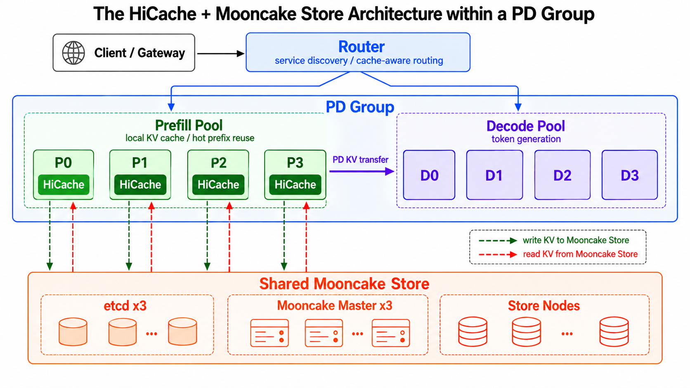

把同样的算力变成更多的token，就是更高的AI生产力。Approaching.AI在生产环境中把KV缓存从单机资源改造成集群级共享资源池，支撑起每天超过一万亿token的产出。
谁能用同样的算力产出更多AI token，并且质量更高、更可靠，谁就拥有更高的AI生产力。随着agent从单轮问答走向持续规划、工具调用和多轮执行，token需求正在从零散的API调用转向持续的大规模生产。在生产环境中部署领先的万亿参数模型后，Approaching.AI现在每天稳定产出超过一万亿高质量AI token。自2026年2月以来，单节点平均token产出效率提升三倍以上，总产能扩大三十倍以上。支撑这场大规模生产的，是覆盖推理引擎、调度、缓存与基础设施的一整套系统级优化，其中Mooncake扮演了关键角色。
token工厂的成本结构相对固定：硬件采购与租赁、电力、数据中心和网络的支出基本固定，而收入取决于token产出量 × 每token价格。每token价格又直接取决于服务质量，TTFT、TPOT和可靠性等指标决定了这些token能否以高标准交付。
目标因此很明确：在严格满足SLO的前提下，最大化系统吞吐量，以及单位算力的token产出。任何性能优化都不能以牺牲SLO为代价。
agent负载的快速增长让这种矛盾更加突出。编码agent、多轮推理和工具调用会反复复用很长的上下文。KV缓存命中能大幅减少prefill计算，而一次缓存未命中可能意味着重算几十万个token。除了浪费算力，这还会显著拉长响应时间，甚至阻塞其他请求的正常响应。
在Approaching.AI，这已经是一个万亿token级别的问题。生产推理系统必须每天可靠地产出超过一万亿token。在这样规模的系统里，哪怕只浪费百分之几的算力，都会转化为巨大的基础设施成本。在万亿token级工厂里，KV缓存不再是一个可选的本地优化，而是影响整体产能与成本的关键基础设施。
我们面对的核心挑战，是把KV缓存从单节点资源变成集群级共享资源，在提升缓存命中率和系统吞吐的同时，仍然满足严格的SLO。
KV缓存的价值在agent与长上下文场景中进一步放大。但如果只依赖GPU的HBM，KV缓存的复用就存在一个内在取舍：分配的缓存空间太小会拉低命中率，迫使系统大量重算历史上下文；分配得太多又会占用处理请求所需的显存，降低新token计算的效率。上下文极长时，这个取舍尤其突出。
因此我们先把SGLang HiCache引入生产环境，在KV缓存的层级中加入容量更大的主机DRAM。这在基本不影响GPU计算效率的前提下，显著提升了可用KV缓存容量与命中率。
但当系统规模扩展到每天超过一万亿token之后，单机缓存的局限很快暴露出来。
一方面，单节点的DRAM容量终究有限，散落在不同节点上的重复KV缓存数据无法共享。另一方面，对于某些KV缓存结构，当时的HiCache架构会在同一节点内的多个TP rank上各存一份，导致单节点内最多出现八倍的数据冗余。这些问题让缓存命中率远低于理想值。
更关键的是，单机本地缓存实际上把KV缓存的位置和请求执行的位置绑在了一起。
当一个会话大部分请求的KV缓存只存在于特定的prefill节点上时，复用这些缓存就要求把会话后续的请求路由回同一批节点。这样，本应由实时负载、请求特征和资源可用性驱动的调度决策，就被缓存所在的位置限制了。
如果KV缓存始终是各节点私有的，缓存复用和集群调度就被耦合在一起：调度器每扩大一次候选集合，都可能以更低的缓存命中率、更多的重算甚至SLO违约为代价。集群规模越大，这种耦合不仅限制了资源池化带来的收益，也压缩了调度算法的设计空间。系统难以根据流量波动、节点故障等实时状况灵活迁移请求，也难以结合上下文长度、缓存命中、计算特征和不同计算节点的硬件特征，做出更细粒度的调度决策。
以负载均衡为例。为了提高命中率，把相同前缀的请求持续路由到少数几个prefill节点，有时会把热门请求集中到同一节点上。请求随即在该节点上堆积排队，违反TTFT的SLO。而把请求挪到其他节点来缓解热点，又会因为KV缓存无法跨节点复用而触发大量重算。在高峰时段，这甚至可能把压力扩散到新节点上。
对万亿token级工厂来说，这已经不是几个百分点缓存命中率的问题，而是直接影响集群调度灵活性、峰值吞吐能力、故障韧性以及SLO达成能力的系统级问题。
因此我们引入Mooncake Store，把原先分散在各个节点上的KV缓存汇聚成一个集群级共享资源。
我们希望同时达成三件事：
● 进一步提升KV缓存命中率；
● 解除KV缓存位置对集群调度的约束；
● 不为推理关键路径引入额外性能开销或系统风险。
从架构上看，SGLang HiCache与Mooncake Store的组合天然解决了前两个目标。真正的挑战在第三个：缓存系统必须足够快、足够稳，绝不能拖慢、更不能拖垮推理系统。这也是过去六个月我们把Mooncake推向万亿token级生产环境时的核心工程难题。
下面先介绍整体部署架构，再说明我们如何解决这些核心挑战。
当KV缓存从单机资源变成集群级共享资源，它就不再只是一个缓存系统，而必须与计算、网络和调度协同设计。
Approaching.AI的生产推理系统由多个group组成，每个group包含若干GPU节点，并通过RDMA做高速KV缓存传输。请求先在网关层分发，再按路由策略转发到具体的group。下面的讨论聚焦单个group内SGLang + Mooncake的部署方式。

每个group内部采用prefill与decode分离的部署方式，并且只在prefill节点上开启HiCache。这是因为长上下文请求的主要计算开销在prefill阶段，缓存命中能直接省掉生成首个token之前的大量重算。decode阶段追求稳定、低延迟的逐token生成，因此我们尽量让decode路径保持简单和稳定。
Mooncake Store在所有prefill和decode节点上以独立的Store Service形式运行。
在decode节点上，主机内存主要由Mooncake Store使用；在prefill节点上，内存由HiCache和Mooncake Store共享。这样就把原本散落在各节点的DRAM组织成一个更大的分布式KV缓存池，为跨节点复用打下基础。
每个prefill节点上嵌入HiCache的Mooncake客户端被配置为不向全局缓存贡献存储，存储由独立的Store Service进程提供。这让推理引擎与缓存系统解耦，两者可以各自独立升级与扩容。考虑到服务器都是双NUMA节点拓扑，我们把一个Mooncake Store Service绑定到一个NUMA节点，尽量为本地KV缓存访问和网络传输保留NUMA亲和性，减少跨NUMA访问开销，并充分利用Mooncake Transfer Engine的拓扑感知传输能力。
控制面上，Mooncake Master配置三个副本，一主两备，分布在三个GPU节点上。Mooncake依赖的etcd服务同样使用三个副本，与其他集群管理组件一起运行在专用的CPU节点上。
只有共享的KV缓存还不够。缓存池化扩大了请求可被调度到的节点集合，但调度器仍需在缓存局部性、实时负载、节点健康和请求特征之间做出合理决策。例如，只追求缓存局部性以减少跨节点网络传输，可能把相同前缀的请求反复送到少数prefill节点，最终形成热点；而只关注负载均衡，又可能频繁把请求迁到缓存较冷的节点，增加远程访问甚至重算。
group内的请求调度基于SMG（SGLang Model Gateway），并针对生产环境做了改进。在prefill侧，调度器会考虑HiCache的本地命中率、节点实时负载、节点健康和请求特征等信息，在满足SLO的前提下尽量提升整体系统吞吐、降低请求TTFT。
在decode侧，重点是持续生成过程中的吞吐量与尾延迟稳定性，调度器会尽可能把生成负载均匀分散到多个decode实例上。
在Kubernetes层，我们用RBG（RoleBasedGroup） 统一管理SGLang和Mooncake的工作负载。RBG为不同应用角色提供拓扑定义与协调策略，让prefill、decode、Mooncake Store等角色作为一个整体部署和管理。作为基础元数据组件，etcd独立运行，不纳入RBG管理。
要把Mooncake带进每天产出超过一万亿token的生产环境，核心问题不只是KV缓存能否共享，而是Mooncake能否跟上token工厂极其苛刻的性能与稳定性要求。SGLang HiCache + Mooncake Store在架构层面解决了缓存命中率和跨节点调度问题，但前提是这套缓存基础设施要足够快、足够稳，不会给推理路径引入新的性能开销或系统风险。
自2026年2月以来，Approaching.AI单节点平均AI token产出效率提升三倍以上，总token产能扩大三十倍以上，KV缓存命中率也显著改善，始终稳定在90% 以上。这意味着Mooncake必须在每个节点上承受数倍增长的KV缓存吞吐，同时支撑单个集群纳入更多推理节点。应用层每提升一分token产出效率，都要求底层缓存系统同步前进。过去六个月，这就是悬在Mooncake生产优化工作头上的达摩克利斯之剑。
KV缓存复用主要发生在prefill阶段。对一个prefill请求，HiCache会先查本地缓存；本地未命中时，它通过RPC向Mooncake Master查询对应KV缓存的元数据，再用RDMA从多个Mooncake Store节点并行取回可用数据。数据就绪之后，请求才进入GPU完成剩余的prefill计算。prefill完成后，新算出、Mooncake中尚不存在的KV缓存会被写回Store，供后续请求复用。随着KV缓存数据持续写入，Mooncake Master还必须持续维护元数据并执行LRU淘汰。
对生产推理来说，取数速度至关重要。请求进入调度队列后，HiCache会尽早异步发起远程KV缓存预取，让网络传输与GPU上已在执行的计算重叠。因此Mooncake需要确保KV缓存的取回尽量被藏在前面请求的执行时间之后。只要远程数据在GPU开始处理当前请求之前就绪，Mooncake Store给推理引擎带来的额外开销几乎不可感知。反过来，如果取数跟不上调度节奏，GPU就必须等待KV缓存到位，缓存系统反而制造了新的空闲时间和TTFT开销。
Mooncake的批量读数据路径很直接：一次Master RPC查询定位缓存数据，随后从多个Store节点并行直读RDMA。因此读性能主要取决于两个因素：Master RPC的查询延迟与吞吐，以及RDMA传输效率，后者又取决于网络带宽和Transfer Engine的性能。我们的生产部署通常使用800 Gbps高性能网卡。再加上Transfer Engine在架构上的优势，例如多网卡聚合和拓扑感知的路径选择，在当前的网络配置和负载特征下，我们尚未观察到RDMA数据传输成为主要性能瓶颈。优化第一个因素之后，生产环境中批量KV缓存读请求的平均延迟低于50毫秒，绝大多数在100毫秒内完成。这使远程KV缓存复用尽可能远离GPU的等待路径。
把KV缓存跨节点池化之后，我们希望每个Mooncake集群能服务尽可能多的prefill和decode节点。更大的group意味着更宽的缓存复用范围、更强的流量波动吸收能力，以及更大的调度优化空间。
我们采取渐进式扩容，而不是一步到位。先在小规模group中验证稳定性，再在测试集群中扩大规模做长时间稳定性测试，持续监控性能与稳定性瓶颈。问题解决后再进入生产灰度发布，确认稳定后全量部署，并以这次部署为基础继续扩到更大的group。通过这种分批验证和逐步扩大的过程，我们把集群扩容本身变成了一套可控、可重复的工程流程。
这个过程里我们遇到了不少问题与挑战。
第一个是Master服务的性能瓶颈。Mooncake Master中的数据被哈希到1024个分片，每个分片有自己的读写锁来控制并发访问。随着Store缓存容量和并发请求增加，Master必须处理更频繁的元数据查询，周期性触发的LRU淘汰也更耗时。淘汰过程中，淘汰线程会依次获取每个分片的写锁。元数据过多时，它会长时间持有分片写锁，阻塞读写请求，让淘汰期间的请求延迟显著上升。
我们从两方面解决：提升淘汰效率，减少淘汰与读写请求之间的锁竞争。前者，我们大幅削减了字符串拷贝、对象构造和内存分配的开销；同时增强写入机制，允许推理引擎的多个rank写入同一对象的不同偏移，从而显著减少缓存对象数量。后者，我们先把副本销毁、内存释放等耗时操作移出淘汰的写锁临界区，缩短持锁时间；随后把锁粒度从分片进一步细化到对象，大幅降低竞争。
第二个是扩容时的性能问题。一个Store节点上线时，需要分配数TB内存并把这块内存注册到多张RDMA网卡；下线时，又要把内存从这些网卡上注销并释放。这个过程非常耗时。我们优化了内存初始化和RDMA注册，取得数倍性能提升，随后加入大页支持，进一步缩短内存分配、注册、注销和释放的时间。
在Master侧，过去让一个Store节点下线需要遍历所有分片以删除该节点相关的元数据，否则后续请求会尝试从已下线节点读取数据而失败。元数据量大时，这个过程可能耗时很久，显著拖延节点摘除。我们把节点摘除拆成两个阶段：「同步失效、异步清理」。先把该segment从分配池中移除并标记为下线中，阻止后续请求读写这个节点的数据，再由后台线程清理元数据。这使Master完成一次节点摘除请求的时间降到毫秒级。
第三个是KV缓存传输过程中的网络问题。我们大多数集群使用RoCE网络并开启基于RTT的拥塞控制。基于Mooncake的prefill-decode分离与KV缓存复用会产生大量KV缓存传输流量。在生产环境中，我们观察到频繁的all-to-all微突发与incast、ECN/CNP报文明显尖峰，以及服务器内部拥塞导致的PFC计数上升。但经过长期监控与测试，我们判断这些现象并不会显著影响KV缓存传输速度或TTFT等生产指标，也不影响推理集群吞吐。
对KV缓存传输来说，生产环境的网络稳定性与抖动比网络性能本身更值得关注。我们发现很多故障与Mooncake Transfer Engine的实现无关，而是源于集群配置。例如OVS配置、路由配置、IOMMU配置、网卡固件与驱动版本不一致，以及Kubernetes网络故障，都可能导致Mooncake Transfer Engine报错。排查RDMA网络错误因此需要检查整条链路上的潜在故障点，而不是只看nccl-tests这类连通性测试。
对大规模推理集群来说，性能决定系统的上限，而稳定性决定这个上限能否在生产中被放心使用。
集群变大之后，硬件故障、网络抖动、进程错误和配置失误会逐渐从偶发事件变成日常事件。而Mooncake Store又处在共享KV缓存数据路径上：如果缓存系统的故障传导到推理引擎，一个局限在单个Store节点、单张网卡或单条传输链路上的问题，就可能升级为整个推理集群的请求阻塞、TTFT波动甚至可用性下降。
因此在部署Mooncake的早期，我们在稳定性上采取了保守策略：分布式KV缓存服务可以短暂不可用，但绝不能影响推理服务本身；局部故障可以发生，但绝不能升级为集群级故障。
按照这个原则，我们在集群隔离、网络隔离、超时与熔断、数据分配策略上加入了一系列保护措施。其中一些在初期上线时刻意做得偏保守，随着Mooncake与集群网络环境趋于稳定，可以依据运维经验适当简化或移除。但在系统快速扩张的阶段，这些机制帮助我们控制了新基础设施带来的风险与故障半径。
第一，我们没有让所有推理节点共用一个巨大的Mooncake Store集群，而是保留推理系统的group边界，在每个group内部署独立的Mooncake Store集群。缓存服务在group之间相互隔离，即使某个group的Mooncake Store整体不可用，影响也局限在该group内，不会波及其它group的KV缓存服务。这牺牲了一部分跨group缓存共享的潜在收益，但换来了更清晰的故障域，也让灰度升级、扩容和故障处理更可控。
第二，我们进一步隔离了Mooncake使用的网络资源。生产中，prefill-decode分离本身就需要prefill与decode节点之间的RDMA传输，而Mooncake Store又引入了另一股可观的KV缓存读写流量。如果两类流量完全共用同一批网卡和Transfer Engine，任何一侧出现异常流量、资源竞争或Transfer Engine故障，都可能影响另一侧。因此在初期上线时，我们为Mooncake Store分配了专用网卡，并为Store与prefill-decode分离使用独立的Transfer Engine实例，尽可能在数据面和软件实例两个层面切断故障传播路径。
更重要的保护来自超时与熔断。HiCache本身提供了读超时机制：当一次从Mooncake的KV缓存读取超过可配置阈值时，HiCache停止等待未完成的传输，只使用已经成功取回的缓存数据，其余部分重新计算。这保证了即使某次远程读取出现长尾延迟，也不会阻塞prefill计算。
在此之上，我们增加了Mooncake Store集群级熔断器。当系统检测到某个Store集群持续报错或不可用时，可以自动把HiCache与该集群断开，临时退化为仅本地KV缓存，让推理继续运行。
我们还专门优化了KV缓存的数据分配策略，以缩小单节点故障的影响范围。在Mooncake默认的分配策略下，KV缓存数据被随机分配到Store节点上，一个长请求的KV缓存会散布在几乎所有节点上。一旦某个节点故障、KV缓存中间某个块丢失，即使后续缓存块仍然可用，也无法再用于前缀复用，从而放大了故障影响。随机的远程写入还会增加跨节点网络开销与延迟。因此我们实现了一套新的分配策略：写入KV缓存数据时，Mooncake优先使用本地Store；本地空间不足时，按确定的顺序尝试其他节点。对同一个写入节点而言这个顺序保持一致，使一个请求的KV缓存尽量集中在前几个候选节点上；不同的写入节点使用不同顺序以维持负载均衡。
SGLang HiCache + Mooncake目前已经可靠支撑Approaching.AI每天超过一万亿token的生产，但在缓存容量、缓存复用范围和硬件配置上仍有优化空间。我们将关注以下几个方向。
引入SSD作为第三级缓存。在agent负载中，KV缓存的生命周期呈现长尾分布：大部分缓存数据很快失效，但有一小部分会在很久之后被再次使用。把这类数据留在昂贵的DRAM中并不划算。我们计划引入SSD作为下一级缓存，把冷KV缓存数据从DRAM异步迁移到SSD，在控制成本的同时扩大有效缓存容量，进一步提升KV缓存命中率。
联邦Mooncake：实现跨group的KV缓存复用。目前我们的Mooncake Store集群在各group内独立部署。这种架构清晰地隔离了故障域，但也给KV缓存复用人为划出了边界：即使相同前缀已经存在于另一个group，进入新group的请求也无法直接复用。接下来我们会在继续扩大单个group的同时打破group边界，计划保留独立集群，同时允许Mooncake客户端在必要时跨集群查询和读取KV缓存数据。这将进一步提升全局缓存命中率，也让路由拥有更大的调度灵活性，请求不必再在命中缓存和跨group调度之间做非此即彼的选择。跨group共享自然会带来更复杂的元数据管理和网络流量控制，以及更大的故障传播风险。随着KV缓存复用范围扩大，我们也必须同步提升跨集群的故障隔离与容错能力，确保更广的共享不会以更大的故障半径为代价。
支持异构推理集群。随着推理基础设施演进，token工厂将不再由完全同构的GPU节点组成。我们计划支持更灵活的异构部署，例如为prefill和decode节点使用不同的加速器。作为连接不同计算节点的共享KV缓存基础设施，Mooncake可以进一步松绑推理服务与特定计算设备之间的耦合。通过进一步解耦计算、传输与缓存，不同阶段的任务可以被动态分配到最契合其负载特征的计算资源上。
感谢Mooncake与SGLang社区在Approaching.AI生产部署与持续优化过程中给予的大力帮助与支持。
文中讨论的Mooncake优化与改进，正在逐步回馈到开源社区。
Approaching.AI：https://approaching-ai.com/en/
Mooncake项目：https://github.com/kvcache-ai/Mooncake
SGLang项目：https://github.com/sgl-project/sglang
参考：https://kvcache.ai/blog/mooncake-in-approaching-ai/